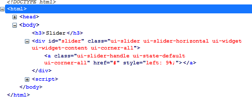
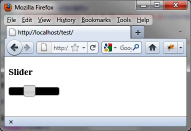

{% include JB/setup %}
{% raw %}
<div>
<div class="book" title="Formatting Content"><div class="book"><div class="book"><div class="book"><h1 class="title2"><a id="formatting_content-id5" class="calibre1"></a>Formatting Content</h1></div></div></div><p class="calibre7">The use of the <code class="literal">slider ()</code> method
    changes the appearance of HTML elements in the page, adding new CSS
    classes that give them the appropriate style.</p><p class="calibre7"><a class="ulink" href="ch07s02.html#html_generated_by_the_slider_open_parent" title="Figure 7-2. HTML generated by the slider () method">Figure 7-2</a> shows
    the HTML generated by jQuery UI, once the <code class="literal">slider
    ()</code> instruction modifies the HTML (the code was recovered using
    the Firebug extension in Firefox).</p><div class="book"><div class="figure"><a id="html_generated_by_the_slider_open_parent" class="firstname"></a><div class="book"><div class="book"><a id="I_mediaobject7_d1e4991" class="firstname"></a></div></div><p class="title4">Figure 7-2. HTML generated by the slider () method</p></div></div><p class="calibre7">CSS classes of elements customize the display. For example, if we
    change the <code class="literal">ui-slider</code> class associated
    with <code class="literal">&lt;div&gt;</code> elements using a
    <code class="literal">&lt;style&gt;</code> tag, as in the following
    HTML code, we can change the slider’s width and background color:</p><a id="I_programlisting7_d1e5007" class="firstname"></a><pre class="programlisting">&lt;!DOCTYPE html&gt;
&lt;script src = jquery.js&gt;&lt;/script&gt;
&lt;script src = jqueryui/js/jquery-ui-1.8.16.custom.min.js&gt;&lt;/script&gt;

&lt;link rel=stylesheet type=text/css
      href=jqueryui/css/smoothness/jquery-ui-1.8.16.custom.css /&gt;

<span class="firstname"><strong class="userinput">&lt;style type=text/css&gt;</strong></span>
  <span class="firstname"><strong class="userinput">div#slider.ui-slider {</strong></span>
    <span class="firstname"><strong class="userinput">width : 100px;</strong></span>
    <span class="firstname"><strong class="userinput">background : black;</strong></span>
  <span class="firstname"><strong class="userinput">}</strong></span>
<span class="firstname"><strong class="userinput">&lt;/style&gt;</strong></span>

&lt;h3&gt;Slider&lt;/h3&gt;
&lt;div id=slider&gt;&lt;/div&gt;

&lt;script&gt;

$("div#slider").slider ();

&lt;/script&gt;</pre><p class="calibre7">This HTML code is identical, except that we added the <code class="literal">&lt;style&gt;</code> tag after the inclusion of jQuery
    UI styles. The addition of our own styles must be done after those of
    jQuery UI, or our changes will be ignored. <a class="ulink" href="ch07s02.html#customized_slider" title="Figure 7-3. Customized slider">Figure 7-3</a> shows the new style.</p><div class="book"><div class="figure"><a id="customized_slider" class="firstname"></a><div class="book"><div class="book"><a id="I_mediaobject7_d1e5038" class="firstname"></a></div></div><p class="title4">Figure 7-3. Customized slider</p></div></div><p class="calibre7">The slider now has a width of 100 pixels and a black
    background.</p></div></div>

{% endraw %}

